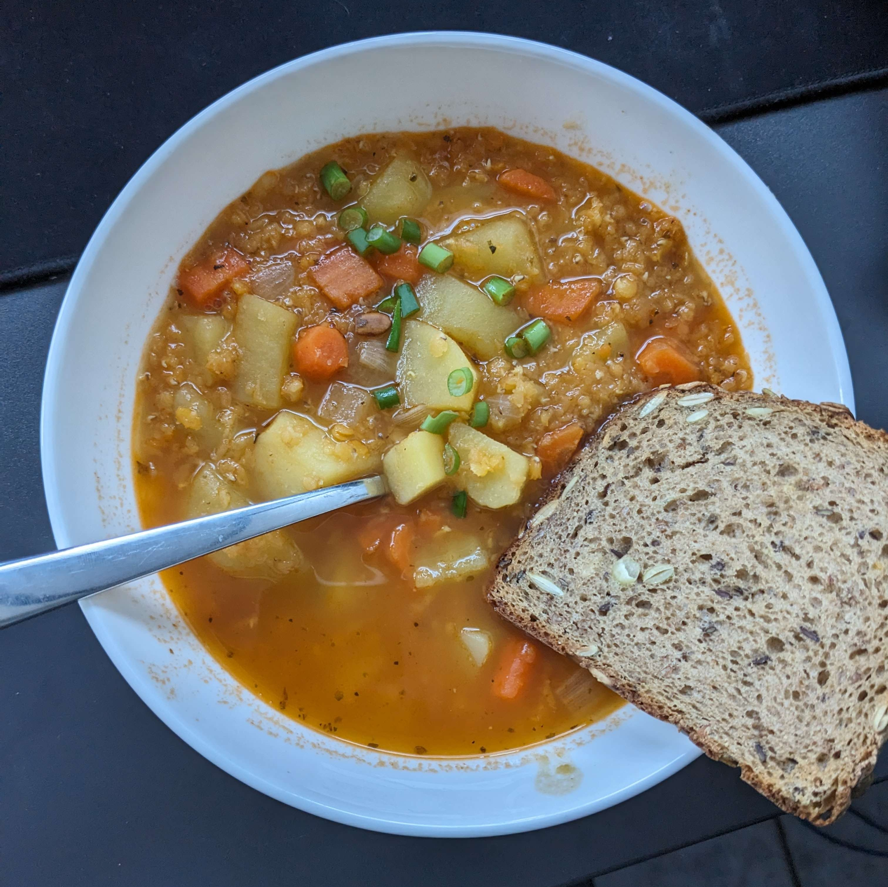

Linsen Suppe

Zutaten
| 2 |
Möhren |
| 1 |
Zwiebeln |
| 1 Tasse |
Rote Linsen |
| einige |
Kartoffeln |
| 1EL |
Tomatenmark |
|
Salz |
|
Pfeffer |
|
Paprika |
Zubereitung
Schritt 1: Gemüsevorbereitung
- Zwiebeln, Möhren und Karotten in kleine Stücke schneiden.
- Das geschnittene Gemüse kräftig anbraten, um Aromen freizusetzen.
- Dazu das Tomatenmark geben.
Schritt 2: Linsen hinzufügen
- Die Linsen zu dem angebratenen Gemüse in den Topf geben.
- Etwa 3-4 Tassen Wasser über die Linsen und das Gemüse gießen, so dass sie gut bedeckt sind.
Schritt 3: Würzen und Abschmecken
- Eine Prise Salz, Pfeffer und gewünschte Gewürze hinzufügen, um den Geschmack zu betonen.
- Die Suppe mit einer kräftigen Gemüsebrühe aufpeppen, um das Geschmackserlebnis zu intensivieren.
Schritt 4: Köchelnde Magie
- Die Hitze auf niedrig stellen und die Suppe sanft 15-20 Minuten köcheln lassen.
- Bei Bedarf Wasser hinzufügen, um die Konsistenz zu justieren, falls die Suppe zu dick wird.
Schritt 5: Fertig zum Genießen
- Den Topf vom Herd nehmen, sobald die Suppe eingekocht ist und die Linsen zart sind.